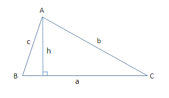
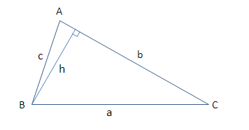
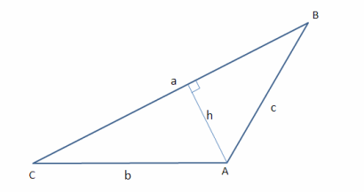
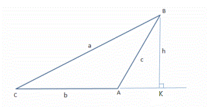

Proof of the Law of Sines
The Law of Sines states that for any triangle ABC, with sides a,b,c (see below)
For more see Law of Sines.
Acute triangles

-
Draw the
altitude h from the
vertex A of the triangle
- From the
definition of the sine function
or
- Since they are both equal to h
- Dividing through by sinB and then sinC
- Repeat the above, this time with the altitude drawn from point B

Using a similar method it can be shown that in this case
- Combining (4) and (5) :
- Q.E.D
Obtuse Triangles
The proof above requires that we draw two
altitudes
of the triangle.
In the case of
obtuse triangles,
two of the altitudes are outside the triangle, so we need a slightly different proof.
It uses one interior altitude as above, but also one exterior altitude.
First the interior altitude. This is the same as the proof for
acute triangles above.

-
Draw the
altitude h from the
vertex A of the triangle
-
or
- Since they are both equal to h
- Dividing through by sinB and then sinC
- Draw the second altitude h from B. This requires extending the side b:

-
The angles BAC and BAK are
supplementary,
so the sine of both are the same.
(see Supplementary angles trig identities)
Angle A is BAC, so
or
- In the larger triangle CBK
or
- From (6) and (7) since they are both equal to h
- Dividing through by sinA then sinC:
- Combining (4) and (9):
- Q.E.D
(C) 2011 Copyright Math Open Reference.
All rights reserved